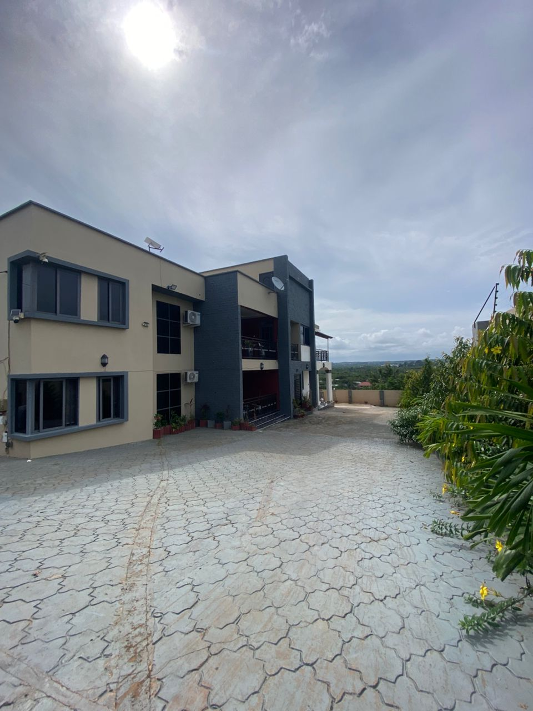

Hillview Residence provides modern accommodation in Cape Coast for students, professionals, families, researchers, visiting scholars, and short-term guests. Our goal is to offer a comfortable, secure, and well-managed environment where guests can study, work, rest, and feel at home.
The residence is positioned to combine convenience with tranquility: close enough to serve the University of Cape Coast community, yet elevated enough to offer a quieter and more scenic living experience.

Thoughtfully arranged rooms and apartments with practical amenities for daily living.
Managed access, CCTV in common areas, electric fencing, and resident guidelines.
A hilltop setting that gives the residence a distinctive sense of openness and calm.